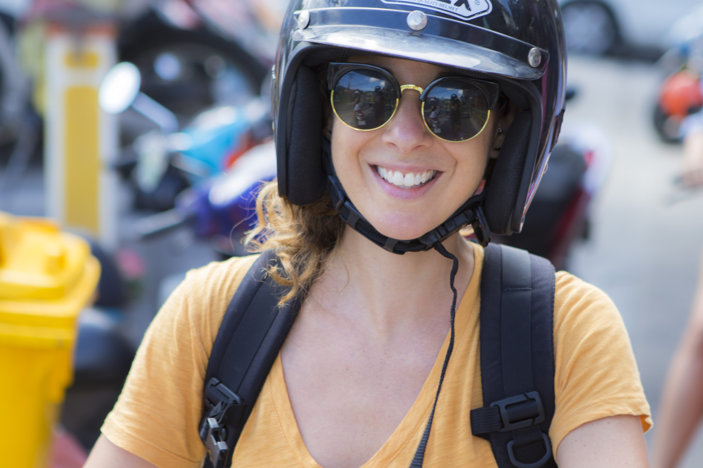

Recent Posts
Podcast Alert

Hey guys! A few weeks ago I had the opportunity to sit down with Sean Tierney, founder of Nomad Prep, and answer his questions about how to stay healthy on the road and the importance of choosing nourishing, whole, plant-based foods in general.
Kara Mosesso
24 September 2018
Read MoreCognitive Conditioning

Welcome to the FINAL installment (6/6) in my brain health series! In my first post, I explained that lifestyle choices can prevent up to 90% of Alzheimer's cases. For the 10% of cases that can't be prevented due to very strong genetic risk (such as in those that carry the APOE4 gene), lifestyle changes can delay presentation or progression of the disease by up to 15 years.
17 August 2018
Read MoreNeuro Naps
Restorative sleep is crucial for cognitive and overall health. We often think of our bodies and brains as being inactive during sleep, but it’s actually quite the opposite. Our brains are active in a very different kind of energetic state that promotes removal of toxins, oxidative by-products and amyloid.
20 July 2018
Read MoreStress Management for Your Memory

Welcome to the FINAL installment (6/6) in my brain health series! In my first post, I explained that lifestyle choices can prevent up to 90% of Alzheimer's cases. For the 10% of cases that can't be prevented due to very strong genetic risk (such as in those that carry the APOE4 gene), lifestyle changes can delay presentation or progression of the disease by up to 15 years.
23 April 2018
Read More